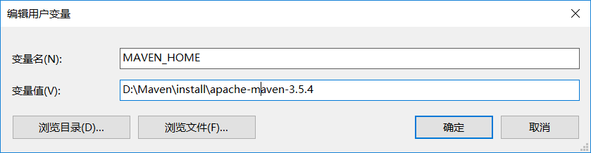
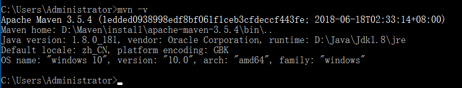

# Maven介绍
Maven是基于项目对象模型(POM)，可以通过一小段描述信息来管理项目的构建，报告和文档的软件项目管理工具。
Maven是跨平台的项目管理工具。主要服务于基于Java平台的项目构建，依赖管理和项目信息管理。
Maven主要有两个功能：
项目构建
依赖管理
什么是构建
构建过程：

项目构建的方式
1、Eclipse
手工操作较多，项目的构建过程都是独立的，很难一步完成。比如：编译、测试、部署等。
开发时每个人的IDE配置都不同，很容易出现本地代码换个地方编译就出错
2、Ant
Ant只是一个项目构建工具，它没有集成依赖管理。
Ant在进行项目构建时，它没有对项目目录结构进行约定，需要手动指定源文件、类文件等目录地址。同时它执行task时，需要显示指定依赖的task，这样会造成大量的代码重复。
3、Maven
Maven不仅是一个项目构建工具，更是一个项目管理工具。它在项目构建工程中，比ant更全面，更灵活。
Maven在进行项目构建时，它对项目目录结构拥有约定，知道你的源代码在哪里，类文件应该放到哪里去。
它拥有生命周期的概念，maven的生命周期是有顺序的，在执行后面的生命周期的任务时，不需要显示的配置前面任务的生命周期。例如执行 mvn install 就可以自动执行编译，测试，打包等构建过程
Maven模型

Maven安装配置
下载maven
Maven的安装
第一步：安装jdk
第二步：把maven解压缩，解压目录最好不要有中文。
D:\Maven\install\apache-maven-3.5.4
第三步：配置环境变量MAVEN_HOME

第四步：配置环境变量PATH，将%MAVEN_HOME%\bin加入Path中，在Windows中一定要注意要用分号；与其他值隔开。
第五步：验证是否安装成功，打开cmd窗口，输入mvn –v

Maven的配置
Maven有两个settings.xml配置文件，一个是全局配置文件，一个是用户配置文件。
全局配置（默认）
%MAVEN_HOME%/conf/settings.xml 是maven全局的配置文件。
该配置文件中配置了本地仓库的路径，默认就是：~/.m2/repository。其中~表示当前用户路径C:\Users\[UserName]。

localRepository：用户仓库，用于检索依赖包路径
用户配置
~/.m2/settings.xml是用户的配置文件（默认没有该文件，需要将全局配置文件拷贝过来在进行修改）
注意：一般本地仓库的地址不使用默认配置，通常情况下需要在用户配置中，配置新的仓库地址。
配置步骤如下：
第一步：创建一个本地仓库目录，比如E:\08-repo\0707\repository。
第二步：复制maven的全局配置文件到~/.m2目录下，即创建用户配置文件
第三步：修改maven的用户配置文件。

注意：
用户级别的仓库在全局配置中一旦设置，全局配置将不再生效，转用用户所设置的仓库，否则使用全局配置文件中的默认路径仓库。
创建Maven工程
Maven的工程结构
Project
|-src
| |-main
| | |-java —— 存放项目的.java文件
| | |-resources —— 存放项目资源文件，如spring, hibernate配置文件
| |-test
| |-java ——存放所有测试.java文件，如JUnit测试类
| |-resources —— 测试资源文件
|-target —— 目标文件输出位置例如.class、.jar、.war文件
|-pom.xml ——maven项目核心配置文件
Maven的工程创建
第一步：根据maven的目录结构创建helloMaven工程
target目录会在编译之后自动创建。

第二步：创建HelloWorld.java
在src/main/java/cn/xqc/maven目录下新建文件Hello.java
public class HelloWorld {
public String sayHello(String name){
return "Hello World :" + name + "!";
}
}
第三步：创建TestHelloWorld.java
public class TestHelloWorld{
@Test
public void testSayHello(){
HelloWorld hw = new HelloWorld();
String result = hw.sayHello("zhangsan");
assertEquals("hello zhangsan",result);
}
}
第四步：配置pom.xml
到此maven工程即创建成功。
Maven的命令
需要在pom.xml所在目录中执行以下命令。
Mvn compile
执行 mvn compile命令，完成编译操作
执行完毕后，会生成target目录，该目录中存放了编译后的字节码文件。
Mvn clean
执行 mvn clean命令
执行完毕后，会将target目录删除。
Mvn test
执行 mvn test命令，完成单元测试操作
执行完毕后，会在target目录中生成三个文件夹：surefire、surefire-reports（测试报告）、test-classes（测试的字节码文件）
Mvn package
执行 mvn package命令，完成打包操作
执行完毕后，会在target目录中生成一个文件，该文件可能是jar、war
Mvn install
执行 mvn install命令，完成将打好的jar包安装到本地仓库的操作
执行完毕后，会在本地仓库中出现安装后的jar包，方便其他工程引用
mvn clean compile命令
cmd 中录入 mvn clean compile命令
组合指令，先执行clean，再执行compile，通常应用于上线前执行，清除测试类
mvn clean test命令
cmd 中录入 mvn clean test命令
组合指令，先执行clean，再执行test，通常应用于测试环节
mvn clean package命令
cmd 中录入 mvn clean package命令
组合指令，先执行clean，再执行package，将项目打包，通常应用于发布前
执行过程：
清理————清空环境
编译————编译源码
测试————测试源码
打包————将编译的非测试类打包
mvn clean install命令
cmd 中录入 mvn clean install 查看仓库，当前项目被发布到仓库中
组合指令，先执行clean，再执行install，将项目打包，通常应用于发布前
执行过程：
清理————清空环境
编译————编译源码
测试————测试源码
打包————将编译的非测试类打包
部署————将打好的包发布到资源仓库中
M2Eclipse
M2Eclipse是eclipse中的maven插件
安装配置M2Eclipse插件
第一步：将以下包中的插件进行复制。

第二步：粘贴到eclipse中的dropins目录中

第三步：查看eclipse中是否有maven插件

第四步：设置maven安装目录

第五步：设置用户配置

创建maven工程
通过骨架创建maven工程
创建工程
第一步：选择new→maven→Maven Project

第二步：next

第三步：next

选择maven的工程骨架，这里我们选择quickstart。
第四步：next

输入GroupId、ArtifactId、Version、Package信息点击finish完成。

创建MavenFirst.java
在src/main/java中创建cn.xqc.maven包，然后创建MavenFirst.java
**package** cn.xqc.maven; **public class** MavenFirst { **public** String sayHello(String name) { **return** "hello " + name; } }
创建TestMavenFirst.java
在src/test/java中创建cn.xqc.maven包，然后创建TestMavenFirst.java
java **package** cn.xqc.maven; **import** org.junit.Assert; **import** org.junit.Test; **public class** TestMavenFirst { \@Test **public void** testSayHello() { MavenFirst first = **new** MavenFirst(); String result = first.sayHello("zhangsan"); Assert.*assertEquals*("hello zhangsan", result); } }java
java```````````````java----java
执行maven命令进行测试
在Eclipse的maven插件中执行maven命令，需要在maven工程或者pom.xml文件上点击右键，选择Run as→maven build..

可以在菜单中看到maven常用的命令已经以菜单的形式出现。
例如：
Maven clean
Maven install
Maven package
Maven test
Maven build和maven build... 并不是maven的命令。
maven build...只是提供一个命令输入功能，可以在此功能中输入自定义的maven命令。
maven build的功能就是执行上次自定义命令。

不通过骨架创建maven工程
通过选择骨架创建maven工程，每次选择骨架时都需要联网下载，如果网络不通或者较慢的情况下会有很长时间的等待。使用很是不方便，所以创建工程时可以不选择骨架直接创建工程。
创建工程
第一步：选择new→maven→Maven Project
第二步：next

第三步：next

Packaging：指定打包方式，默认为jar。选项有：jar、war、pom。
第四步：点击finish，完成maven工程创建。
修改pom文件
在Maven-second工程中依赖使用maven-first工程的代码
java \<project xmlns=*"http://maven.apache.org/POM/4.0.0"* xmlns:xsi=*"http://www.w3.org/2001/XMLSchema-instance"* xsi:schemaLocation=*"http://maven.apache.org/POM/4.0.0 http://maven.apache.org/xsd/maven-4.0.0.xsd"*\> \<modelVersion\>4.0.0\</modelVersion\> \<groupId\>cn.xqc.maven\</groupId\> \<artifactId\>maven-second\</artifactId\> \<version\>0.0.1-SNAPSHOT\</version\> \<dependencies\> \<dependency\> \<groupId\>junit\</groupId\> \<artifactId\>junit\</artifactId\> \<version\>4.12\</version\> \</dependency\> \<dependency\> \<groupId\>cn.xqc.maven\</groupId\> \<artifactId\>maven-first\</artifactId\> \<version\>0.0.1-SNAPSHOT\</version\> \</dependency\> \</dependencies\> \</project\>java
java````````````````````````````````````java-----------------java
创建MavenSecond.java
java **package** cn.xqc.maven; **public class** MavenSecond { **public** String sayHello(String name) { MavenFirst first = **new** MavenFirst(); **return** first.sayHello(name) + ":second"; } }java
java`````````java---------java
创建TestMavenSecond.java
java **package** cn.xqc.maven; **import** org.junit.Assert; **import** org.junit.Test; **public class** TestMavenSecond { \@Test **public void** testSayHello() { MavenSecond second = **new** MavenSecond(); String result = second.sayHello("zhangsan"); Assert.*assertEquals*("hello zhangsan:second", result); } }java
java```````````````java----------------java
测试工程

如果maven-first工程没有安装则会出现以下错误：
java [INFO] Scanning for projects... [INFO] [INFO]---------------- [INFO] Building maven-second 0.0.1-SNAPSHOT [INFO] ---------------- [WARNING] The POM for cn.xqc:maven-first:jar:0.0.1-SNAPSHOT is missing, no dependency information available [INFO]---------------- [INFO] BUILD FAILURE [INFO] ---------------- [INFO] Total time: 0.218s [INFO] Finished at: Fri Sep 25 15:06:00 CST 2015 [INFO] Final Memory: 4M/15M [INFO]---------------- [ERROR] Failed to execute goal on project maven-second: Could not resolve dependencies for project cn.xqc:maven-second:jar:0.0.1-SNAPSHOT: Could not find artifact cn.xqc:maven-first:jar:0.0.1-SNAPSHOT -> [Help 1] [ERROR] [ERROR] To see the full stack trace of the errors, re-run Maven with the -e switch. [ERROR] Re-run Maven using the -X switch to enable full debug logging. [ERROR] [ERROR] For more information about the errors and possible solutions, please read the following articles: [ERROR] [Help 1] http://cwiki.apache.org/confluence/display/MAVEN/DependencyResolutionException java
java``````````````````````````````````````````````````````````````````java-----------java
提示找不到maven-first的jar包。当系统运行时是从本地仓库中找依赖的jar包的，所以必须先将maven-first安装才能正常运行，需要在maven-first工程上运行 mvn install命令安装到本地仓库。
Maven核心概念
坐标
什么是坐标？
在平面几何中坐标（x,y）可以标识平面中唯一的一点。在maven中坐标就是为了定位一个唯一确定的jar包。
Maven世界拥有大量构建，我们需要找一个用来唯一标识一个构建的统一规范
拥有了统一规范，就可以把查找工作交给机器
Maven坐标主要组成
groupId：定义当前Maven组织名称
artifactId：定义实际项目名称
version：定义当前项目的当前版本
依赖管理
就是对项目中jar 包的管理。可以在pom文件中定义jar包的GAV坐标，管理依赖。
依赖声明主要包含如下元素：
<dependencies>
<dependency>
<groupId>junit</groupId>
<artifactId>junit</artifactId>
<version>4.10</version>
<scope>test</scope>
</dependency>
</dependencies>
依赖范围

其中依赖范围scope 用来控制依赖和编译，测试，运行的classpath的关系. 主要的是三种依赖关系如下：
1.compile： 默认编译依赖范围。对于编译，测试，运行三种classpath都有效
2.test：测试依赖范围。只对于测试classpath有效
3.provided：已提供依赖范围。对于编译，测试的classpath都有效，但对于运行无效。因为由容器已经提供，例如servlet-api
4.runtime:运行时提供。例如:jdbc驱动
依赖传递
直接依赖和间接依赖
如果B中使用A，C中使用B，则称B是C的直接依赖，而称A是C的间接依赖。
C->B B->A
C直接依赖B
C间接依赖A

依赖范围对传递依赖的影响

左边第一列表示第一直接依赖范围
上面第一行表示第二直接依赖范围
中间的交叉单元格表示传递性依赖范围。
总结：
当第二依赖的范围是compile的时候，传递性依赖的范围与第一直接依赖的范围一致。
当第二直接依赖的范围是test的时候，依赖不会得以传递。
当第二依赖的范围是provided的时候，只传递第一直接依赖范围也为provided的依赖，且传递性依赖的范围同样为 provided；
当第二直接依赖的范围是runtime的时候，传递性依赖的范围与第一直接依赖的范围一致，但compile例外，此时传递的依赖范围为runtime；
依赖冲突
- 如果直接与间接依赖中包含有同一个坐标不同版本的资源依赖，以直接依赖的版本为准（就近原则）
1、Maven-first工程中依赖log4j-1.2.8版本

那么maven-third中依赖的就是log4j-1.2.8
2、maven-second工程中依赖log4j-1.2.9版本

那么maven-third中依赖的就是log4j-1.2.9，因为它直接依赖的maven-second项目中依赖的就是1.2.9版本
- 如果直接依赖中包含有同一个坐标不同版本的资源依赖，以配置顺序下方的版本为准（就近原则）
Maven-second中依赖log4j-1.2.9和log4j-1.2.14

此时log4j-1.2.14版本生效。

可选依赖
\
在依赖中添加optional选项决定此依赖是否向下传递，如果是true则不传递，如果是false就传递，默认为false。

排除依赖
<exclusions>
<exclusion>
<groupId>cn.xqc.maven</groupId>
<artifactId>maven-first</artifactId>
</exclusion>
</exclusions>
排除依赖包中所包含的依赖关系，不需要添加版本号。
如果在本次依赖中有一些多余的jar包也被传递依赖过来，如果想把这些jar包排除的话可以配置exclusions进行排除。

生命周期
什么是生命周期？
Maven生命周期就是为了对所有的构建过程进行抽象和统一。包括项目清理、初始化、编译、打包、测试、部署等几乎所有构建步骤。
生命周期可以理解为构建工程的步骤。
在Maven中有三套相互独立的生命周期，请注意这里说的是“三套”，而且“相互独立”，这三套生命周期分别是：
Clean Lifecycle： 在进行真正的构建之前进行一些清理工作。
Default Lifecycle： 构建的核心部分，编译，测试，打包，部署等等。
Site Lifecycle： 生成项目报告，站点，发布站点。
再次强调一下它们是相互独立的，你可以仅仅调用clean来清理工作目录，仅仅调用site来生成站点。当然你也可以直接运行 mvn clean install site 运行所有这三套生命周期。
Maven三大生命周期
clean：清理项目
每套生命周期都由一组阶段(Phase)组成，我们平时在命令行输入的命令总会对应于一个特定的阶段。比如，运行mvn clean，这个的clean是Clean生命周期的一个阶段。有Clean生命周期，也有clean阶段。Clean生命周期一共包含了三个阶段：
pre-clean 执行一些需要在clean之前完成的工作
clean 移除所有上一次构建生成的文件
post-clean 执行一些需要在clean之后立刻完成的工作
mvn clean中的clean就是上面的clean，在一个生命周期中，运行某个阶段的时候，它之前的所有阶段都会被运行，也就是说，mvn clean 等同于 mvn pre-clean clean ，如果我们运行 mvn post-clean ，那么pre-clean，clean都会被运行。这是Maven很重要的一个规则，可以大大简化命令行的输入。
default：构建项目
Default生命周期是Maven生命周期中最重要的一个，绝大部分工作都发生在这个生命周期中。这里，只解释一些比较重要和常用的阶段：
validate
generate-sources
process-sources
generate-resources
process-resources 复制并处理资源文件，至目标目录，准备打包。
compile 编译项目的源代码。
process-classes
generate-test-sources
process-test-sources
generate-test-resources
process-test-resources 复制并处理资源文件，至目标测试目录。
test-compile 编译测试源代码。
process-test-classes
test 使用合适的单元测试框架运行测试。这些测试代码不会被打包或部署。
prepare-package
package 接受编译好的代码，打包成可发布的格式，如 JAR 。
pre-integration-test
integration-test
post-integration-test
verify
install 将包安装至本地仓库，以让其它项目依赖。
deploy 将最终的包复制到远程的仓库，以让其它开发人员与项目共享。
运行任何一个阶段的时候，它前面的所有阶段都会被运行，这也就是为什么我们运行mvn install 的时候，代码会被编译，测试，打包。此外，Maven的插件机制是完全依赖Maven的生命周期的，因此理解生命周期至关重要。
site：生成项目站点
Site生命周期
pre-site 执行一些需要在生成站点文档之前完成的工作
site 生成项目的站点文档
post-site 执行一些需要在生成站点文档之后完成的工作，并且为部署做准备
site-deploy 将生成的站点文档部署到特定的服务器上
这里经常用到的是site阶段和site-deploy阶段，用以生成和发布Maven站点，这可是Maven相当强大的功能，Manager比较喜欢，文档及统计数据自动生成，很好看。
Maven插件
Maven的核心仅仅定义了抽象的生命周期，具体的任务都是交由插件完成的。每个插件都能实现一个功能，每个功能就是一个插件目标。Maven的生命周期与插件目标相互绑定，以完成某个具体的构建任务。
例如compile就是插件maven-compiler-plugin的一个插件目标
Maven编译插件
<plugin>
<groupId>org.apache.maven.plugins</groupId>
<artifactId>maven-compiler-plugin</artifactId>
<configuration>
<source>1.7</source>
<target>1.7</target>
<encoding>UTF-8</encoding>
</configuration>
</plugin>

修改配置文件后，在工程上点击右键选择maven→update project configration

Tomcat插件
使用maven创建一个web工程
第一步：不选用骨架

第二步：将打包方式选择为war

第三步：点击finish，工程创建成功。
第四步：在工程中添加web.xml

Web.xml内容如下：
```xml <?xml version="1.0" encoding="UTF-8"?>
第五步：在webapp下创建index.jsp
#### 运行tomcat插件
tomcat:run 运行tomcat6（默认）
tomcat7:run 运行tomcat7（推荐，但是需要添加插件）
```xml
<plugin>
<!-- 配置插件 -->
<groupId>org.apache.tomcat.maven</groupId>
<artifactId>tomcat7-maven-plugin</artifactId>
<configuration>
<port>8080</port>
<path>/</path>
</configuration>
</plugin>

继承
继承是为了消除重复，可以把很多相同的配置提取出来。例如：grouptId，version等
创建父工程


创建子工程
创建方式有两种：
一种是创建新工程为子工程，在创建时设置父工程的GAV。
一种是修改原有的工程为子工程，在子工程的pom.xml文件中手动添加父工程的GAV。


现有工程继承父工程只需要在pom文件中添加parent节点即可。
父工程统一依赖jar包
在父工程中对jar包进行依赖，在子工程中都会继承此依赖。


父工程统一管理版本号
Maven使用dependencyManagement管理依赖的版本号。
注意：此处只是定义依赖jar包的版本号，并不实际依赖。如果子工程中需要依赖jar包还需要添加dependency节点。
父工程：


子工程：


父工程中版本号提取
当父工程中定义的jar包越来越多，找起来越来越麻烦，所以可以把版本号提取成一个属性集中管理。

子工程的jar包版本不受影响：

聚合
聚合一般是一个工程拆分成多个模块开发，每个模块是一个独立的工程，但是要是运行时必须把所有模块聚合到一起才是一个完整的工程，此时可以使用maven的聚合工程。
例如电商项目中，包括商品模块、订单模块、用户模块等。就可以对不同的模块单独创建工程，最终在打包时，将不同的模块聚合到一起。
例如同一个项目中的表现层、业务层、持久层，也可以分层创建不同的工程，最后打包运行时，再聚合到一起。
创建一个聚合工程
聚合工程的打包方式必须是pom，一般聚合工程和父工程合并为一个工程。


创建持久层工程
第一步：在maven-web工程上，点击new –> project

第二步：next

创建业务层工程
与持久层工程创建一样
创建表现层工程

点击next，进行下面的页面

在maven-controller中添加web.xml和index.jsp

聚合之后的maven-web工程的pom文件内容如下：

运行maven-web聚合工程
Tomcat7:run
注意：运行之前，需要将maven-parent工程安装到本地仓库中。

Maven仓库管理
什么是Maven仓库？
用来统一存储所有Maven共享构建的位置就是仓库。根据Maven坐标定义每个构建在仓库中唯一存储路径大致为：groupId/artifactId/version/artifactId-version.packaging
仓库的分类
1、本地仓库
~/.m2/repository
每个用户只有一个本地仓库
2、远程仓库
- 中央仓库：Maven默认的远程仓库，不包含版权资源
- 私服：是一种特殊的远程仓库，它是架设在局域网内的仓库

Maven私服
安装Nexus
为所有来自中央仓库的构建安装提供本地缓存。
下载网站：http://nexus.sonatype.org/
安装版本：nexus-2.7.0-06.war
第一步：将下载的nexus的war包复制到tomcat下的webapps目录。
第二步：启动tomcat。nexus将在c盘创建sonatype-work目录【C:\Users\当前用户\sonatype-work\nexus】。
Nexus的目录结构
- 目录结构如下：

- Indexer 索引目录结构：

- Storage存储目录结构：

访问Nexus
访问URL: http://localhost:8080/nexus-2.7.0-06/
默认账号:
用户名： admin
密码： admin123
Nexus的仓库和仓库组

仓库有4种类型 :
group(仓库组)：一组仓库的集合
hosted(宿主)：配置第三方仓库 （包括公司内部私服 ）
proxy(代理)：私服会对中央仓库进行代理，用户连接私服，私服自动去中央仓库下载jar包或者插件
virtual(虚拟)：兼容Maven1 版本的jar或者插件
Nexus的仓库和仓库组介绍:
3rd party: 一个策略为Release的宿主类型仓库，用来部署无法从公共仓库获得的第三方发布版本构建
Apache Snapshots: 一个策略为Snapshot的代理仓库，用来代理Apache Maven仓库的快照版本构建
Central: 代理Maven中央仓库
Central M1 shadow: 代理Maven1 版本 中央仓库
Codehaus Snapshots: 一个策略为Snapshot的代理仓库，用来代理Codehaus Maven仓库的快照版本构件
Releases: 一个策略为Release的宿主类型仓库，用来部署组织内部的发布版本构件
Snapshots: 一个策略为Snapshot的宿主类型仓库，用来部署组织内部的快照版本构件
Public Repositories:该仓库组将上述所有策略为Release的仓库聚合并通过一致的地址提供服务
配置所有构建均从私服下载
在本地仓库的setting.xml中配置如下：
java \<mirrors\> \<mirror\> \<!--此处配置所有的构建均从私有仓库中下载 \*代表所有，也可以写central --\> \<id\>nexus\</id\> \<mirrorOf\>\*\</mirrorOf\> \<url\>http://localhost:8080/nexus-2.7.0-06/content/groups/public/\</url\> \</mirror\> \</mirrors\>java

### 部署构建到Nexus
#### 第一步：Nexus的访问权限控制
在本地仓库的setting.xml中配置如下：
```java \<server\> \<id\>releases\</id\> \<username\>admin\</username\> \<password\>admin123\</password\> \</server\> \<server\> \<id\>snapshots\</id\> \<username\>admin\</username\> \<password\>admin123\</password\> \</server\> ```java
```java````````````--------```java
#### 第二步：配置pom文件
在需要构建的项目中修改pom文件
```java \<distributionManagement\> \<repository\> \<id\>releases\</id\> \<name\>Internal Releases\</name\> \<url\>http://localhost:8080/nexus-2.7.0-06/content/repositories/releases/\</url\> \</repository\> \<snapshotRepository\> \<id\>snapshots\</id\> \<name\>Internal Snapshots\</name\> \<url\>http://localhost:8080/nexus-2.7.0-06/content/repositories/snapshots/\</url\> \</snapshotRepository\> \</distributionManagement\> ```java
```java`````````````````````java----------------```java
#### 第三步：执行maven的deploy命令

# 问题
## 手动添加jar到Maven仓库
**常用Maven仓库网址：**
http://mvnrepository.com/
http://search.maven.org/
http://repository.sonatype.org/content/groups/public/
http://people.apache.org/repo/m2-snapshot-repository/
http://people.apache.org/repo/m2-incubating-repository/
### **演示添加一个 ojdbc-10.2.0.4.0.jar 的JAR包：**
**1.1 登陆http://mvnrepository.com/ 这个地址，在搜索栏中输入你要搜索的 JAR 包的关键字：**

#### **1.2 选择你想要下载的Jar包版本：**

### 1.3 下载Jar包：

### **Maven 安装 JAR 包的命令：**
```xml
这里就是上图中的Jar包信息：
<!-- https://mvnrepository.com/artifact/ojdbc/ojdbc --><!-- (参数一)：下载到本地的ojdbc-10.2.0.4.0.jar包的真实存放路径 -->
<dependency>
<groupId>ojdbc</groupId>-----------------(参数二)
<artifactId>ojdbc</artifactId>-----------(参数三)
<version>10.2.0.4.0</version>------------(参数四)
</dependency>
用maven命令将jar包移动到maven的本地repository中。
语法：
mvn install:install-file -Dfile=jar包的位置(参数一) -DgroupId=groupId(参数二) -DartifactId=artifactId(参数三) -Dversion=version(参数四) -Dpackaging=jar
我把“ojdbc-10.2.0.4.0.jar”放到了“D:\Program Files\mvn\”下，
注意：“Program Files”中间有空格，所以要加双引号，另外三个参数，从上面复制过来即可，下面是我安装ojdbc-10.2.0.4.0.jar包使用的命令：
mvn install:install-file -Dfile=``"D:\Program Files\mvn\ojdbc-10.2.0.4.0.jar"` `-DgroupId=com.oracle -DartifactId=ojdbc14 -Dversion=10.2.0.4.0 -Dpackaging=jar
需要注意以下几点： 1.注意"-"不能缺少 install后面的"-"是没有空格的 2.注意"-Dfile"中jar包的路径和jar包的名字. 3.注意看cmd命令提示,查看本地repository中是否成功的复制了jar包.